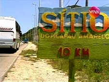
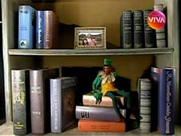
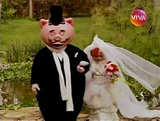

Sítio do Picapau Amarelo
| EPISÓDIO | EXIBIÇÃO | REPRISE | |||
|---|---|---|---|---|---|
| 1ª TEMPORADA - ANO 1 - 2001 | |||||
| 001 | 1x01 | "Reino Das Águas Claras" 1º episódio |
12/10/2001 | 19/05/2010 | |
| 002 | 1x02 |  | "Reino Das Águas Claras" 2º episódio |
15/10/2001 | 20/05/2010 |
| 003 | 1x03 |  | "Reino Das Águas Claras" 3º episódio |
16/10/2001 | 21/05/2010 |
| 004 | 1x04 |  | "Reino Das Águas Claras" 4º episódio |
17/10/2001 | 24/05/2010 |
| 005 | 1x05 | "Reino Das Águas Claras" 5º episódio |
18/10/2001 | 25/05/2010 | |
| 006 | 1x06 | "Reino Das Águas Claras" 6º episódio O Viva exibiu uma versão da história recomposta em 5 capítulos. |
19/10/2001 | - | |
| 007 | 1x07 | "O Saci" 1º episódio |
22/10/2001 | 26/05/2010 | |
| 008 | 1x08 | "O Saci" 2º episódio O feitiço de Cuca transforma Narizinho em pedra. |
23/10/2001 | 27/05/2010 | |
| 009 | 1x09 | "O Saci" 3º episódio O lobisomem aterroriza Saci e Pedrinho. |
24/10/2001 | 28/05/2010 | |
| 010 | 1x10 | "O Saci" 4º episódio |
25/10/2001 | 31/05/2010 | |
| 011 | 1x11 | "O Saci" 5º episódio Primeira aparição da personagem Iara. |
26/10/2001 | 01/06/2010 | |